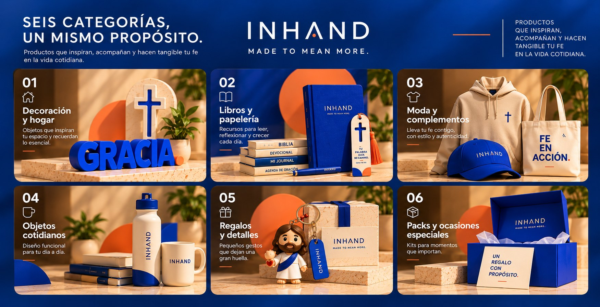

INHAND · MADE TO MEAN MORE.
Diseño protagonista.
Fe claramente presente.
Productos de diseño contemporáneo inspirados en la fe cristiana, pensados para expresar, compartir y celebrar aquello que importa.

Productos de diseño contemporáneo inspirados en la fe cristiana, pensados para expresar, compartir y celebrar aquello que importa.
